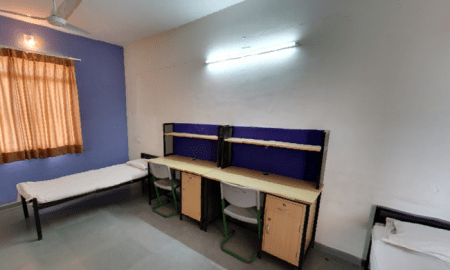

Hostel Facility Scheme for Scheduled Tribe Students Pursuing Higher Education in New Delhi

The state Government of Madhya Pradesh provides hostel facility for Scheduled Tribe Students who have got admission in higher education institutions of New Delhi. The main purpose of the scheme is to provide basic facilities for Madhya Pradesh Scheduled Tribe students such as housing, water, and electricity etc. The government also provides a scholarship for scheduled tribe students who are studying in higher education institutions in New Delhi. It is mandatory that the student must be the native of Madhya Pradesh and belongs to declared scheduled tribe category of Madhya Pradesh. In this scheme, only those students will get benefits who have passed a 12th class exam from any school of Madhya Pradesh, whether the exam has been conducted either by C.B.S.E. or by the Board of Secondary Education Madhya Pradesh. The main objective of the scheme is to provide accommodation and other facilities like reimbursement of electricity, water expenses, and scholarships to scheduled tribe category students of Madhya Pradesh who are studying in higher education institutions at New Delhi
Benefits of Hostel Facility Scheme for Scheduled Tribe Students:
1. The government provides accommodation and other facilities like reimbursement of electricity, water expenses of Rs. 100/- per month per student for up to 12 months
2. Scholarship benefits of Rs. 500/- per month per student for 12 month
3. The government also provide a one-time grant of Rs. 2000/- per student only once at the time of admission
Eligibility for Hostel Facility Scheme for Scheduled Tribe Students:
1. Applicant should be resident of Madhya Pradesh state
2. Applicant should belong to scheduled tribe category in Madhya Pradesh
3. Only those students are eligible who have passed 12th class exam from any school of Madhya Pradesh
4. Student must get admission in first year or above classes of graduation or in professional courses in government or in recognized non-government institutions